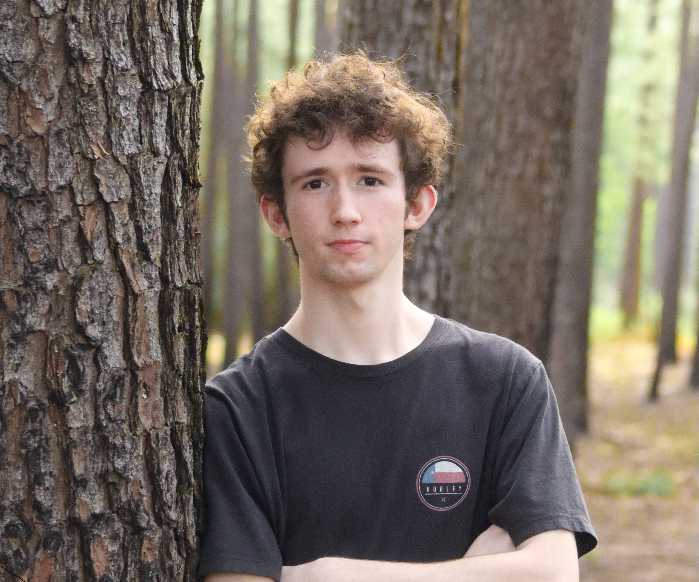

Hello, I'm Luca Giannotti. I am a Computer Science student at Texas A&M University pursuing a B.S. (Hons.) with minors in Philosophy and Mathematics.
My work centers on data systems, software tooling, and practical infrastructure. I currently work with Texas A&M Baseball R&D, where I build data pipelines and statistical models to support player development, training optimization, and in-game decision making. I am also the maintainer of Lees, a self-hosted web application for managing cider and mead recipes, batches, and inventory.
I have also built and deployed projects like TAMU Statistics and a self-hosted homelab infrastructure stack, using tools such as Python, SQL, JavaScript, Docker, FastAPI, React, and Linux. My coursework has included data structures, computer organization, programming languages, and applied mathematics.